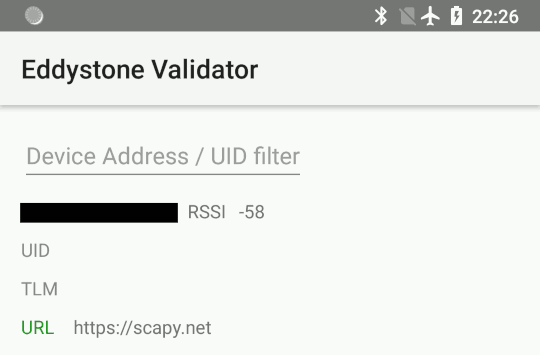
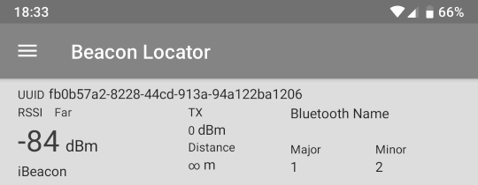

Bluetooth
Note
If you’re new to using Scapy, start with the usage documentation, which describes how to use Scapy with Ethernet and IP.
Warning
Scapy does not support Bluetooth interfaces on Windows.
What is Bluetooth?
Bluetooth is a short range, mostly point-to-point wireless communication protocol that operates on the 2.4GHz ISM band.
Bluetooth standards are publicly available from the Bluetooth Special Interest Group.
Broadly speaking, Bluetooth has three distinct physical-layer protocols:
- Bluetooth Basic Rate (BR) and Enhanced Data Rate (EDR)
These are the “classic” Bluetooth physical layers.
BR reaches effective speeds of up to 721kbit/s. This was ratified as
IEEE 802.15.1-2002(v1.1) and-2005(v1.2).EDR was introduced as an optional feature of Bluetooth 2.0 (2004). It can reach effective speeds of 2.1Mbit/s, and has lower power consumption than BR.
In Bluetooth 4.0 and later, this is not supported by Low Energy interfaces, unless they are marked as dual-mode.
- Bluetooth High Speed (HS)
Introduced as an optional feature of Bluetooth 3.0 (2009), this extends Bluetooth by providing
IEEE 802.11(WiFi) as an alternative, higher-speed data transport. Nodes negotiate switching with AMP.This is only supported by Bluetooth interfaces marked as +HS. Not all Bluetooth 3.0 and later interfaces support it.
- Bluetooth Low Energy (BLE)
Introduced in Bluetooth 4.0 (2010), this is an alternate physical layer designed for low power, embedded systems. It has shorter setup times, lower data rates and smaller MTU sizes. It adds broadcast and mesh network topologies, in addition to point-to-point links.
This is only supported by Bluetooth interface marked as +LE or Low Energy – not all Bluetooth 4.0 and later interfaces support it.
Most Bluetooth interfaces on PCs use USB connectivity (even on laptops), and this is controlled with the Host-Controller Interface (HCI). This typically doesn’t support promiscuous mode (sniffing), however there are many other dedicated, non-HCI devices that support it.
Bluetooth sockets (AF_BLUETOOTH)
There are multiple protocols available for Bluetooth through AF_BLUETOOTH
sockets:
- Host-controller interface (HCI)
BTPROTO_HCI This is the “base” level interface for communicating with a Bluetooth controller. Everything is built on top of this, and this represents about as close to the physical layer as one can get with regular Bluetooth hardware.
Scapy class:
BluetoothMonitorSocketAllows to capture all HCI transactions that are taking place over all HCI interfaces (including in BlueZ core). It is intended to perform monitoring of transactions, device attachment and removal, BlueZ logging…
Scapy class:
BluetoothUserSocketThis socket interacts with a Bluetooth controller with complete and exclusive control of de device. This means that BlueZ will not try to take control of the interface and will not help you manage connections via this interface.
Scapy class:
BluetoothHCISocketUsing HCI protocol, this socket interacts with a Bluetooth controller but does not have exclusive control over it, allowing BlueZ and other applications to still use the adapter to communicate with devices.
- Logical Link Control and Adaptation Layer Protocol (L2CAP)
BTPROTO_L2CAP Scapy class:
BluetoothL2CAPSocketSitting above the HCI, it provides connection and connection-less data transport to higher level protocols. It provides protocol multiplexing, packet segmentation and reassembly operations.
When communicating with a single device, one may use a L2CAP channel.
- RFCOMM
BluetoothRFCommSocket Scapy class:
BluetoothRFCommSocketRFCOMM is a serial port emulation protocol which operates over L2CAP.
In addition to regular data transfer, it also supports manipulation of all of RS-232’s non-data control circuitry (RTS, DTR, etc.)
Bluetooth on Linux
Linux’s Bluetooth stack is developed by the BlueZ project. The Linux kernel
contains drivers to provide access to Bluetooth interfaces using HCI, which
are exposed through sockets with AF_BLUETOOTH.
BlueZ also provides a user-space companion to these kernel interfaces. The key components are:
bluetoothdA daemon that provides access to Bluetooth devices over D-Bus.
bluetoothctlAn interactive command-line program which interfaces with the
bluetoothdover D-Bus.hcitoolA command-line program which interfaces directly with kernel interfaces.
Support for Classic Bluetooth in bluez is quite mature, however BLE is under active development.
First steps
Note
You must run these examples as root. These have only been tested on
Linux, and require Scapy v2.4.3 or later.
Verify Bluetooth device
Before doing anything else, you’ll want to check that your Bluetooth device has actually been detected by the operating system:
$ hcitool dev
Devices:
hci0 xx:xx:xx:xx:xx:xx
Opening a HCI socket
The first step in Scapy is to open a HCI socket to the underlying Bluetooth device:
>>> # Open a HCI socket to device hci0
>>> bt = BluetoothHCISocket(0)
Send a control packet
This packet contains no operation (ie: it does nothing), but it will test that you can communicate through the HCI device:
>>> ans, unans = bt.sr(HCI_Hdr()/HCI_Command_Hdr())
Received 1 packets, got 1 answers, remaining 0 packets
You can then inspect the response:
>>> # ans[0] = Answered packet #0
>>> # ans[0][1] = The response packet
>>> p = ans[0][1]
>>> p.show()
###[ HCI header ]###
type= Event
###[ HCI Event header ]###
code= 0xf
len= 4
###[ Command Status ]###
status= 1
number= 2
opcode= 0x0
Receiving all events
To start capturing all events from the HCI device, use sniff:
>>> pkts = bt.sniff()
(press ^C after a few seconds to stop...)
>>> pkts
<Sniffed: TCP:0 UDP:0 ICMP:0 Other:0>
Unless your computer is doing something else with Bluetooth, you’ll probably get
0 packets at this point. This is because sniff doesn’t actually enable any
promiscuous mode on the device.
However, this is useful for some other commands that will be explained later on.
Importing and exporting packets
Just like with other protocols, you can save packets for
future use in libpcap format with wrpcap:
>>> wrpcap("/tmp/bluetooth.pcap", pkts)
And load them up again with rdpcap:
>>> pkts = rdpcap("/tmp/bluetooth.pcap")
Working with Bluetooth Low Energy
Note
This requires a Bluetooth 4.0 or later interface that supports BLE, either as a dedicated LE chipset or a dual-mode LE + BR/EDR chipset (such as an RTL8723BU).
These instructions only been tested on Linux, and require Scapy v2.4.3 or later. There are bugs in earlier versions which decode packets incorrectly.
These examples presume you have already opened a HCI socket
(as bt).
Discovering nearby devices
Enabling discovery mode
Start active discovery mode with:
>>> # type=1: Active scanning mode
>>> bt.sr(
... HCI_Hdr()/
... HCI_Command_Hdr()/
... HCI_Cmd_LE_Set_Scan_Parameters(type=1))
Received 1 packets, got 1 answers, remaining 0 packets
>>> # filter_dups=False: Show duplicate advertising reports, because these
>>> # sometimes contain different data!
>>> bt.sr(
... HCI_Hdr()/
... HCI_Command_Hdr()/
... HCI_Cmd_LE_Set_Scan_Enable(
... enable=True,
... filter_dups=False))
Received 1 packets, got 1 answers, remaining 0 packets
In the background, there are already HCI events waiting on the socket. You can
grab these events with sniff:
>>> # The lfilter will drop anything that's not an advertising report.
>>> adverts = bt.sniff(lfilter=lambda p: HCI_LE_Meta_Advertising_Reports in p)
(press ^C after a few seconds to stop...)
>>> adverts
<Sniffed: TCP:0 UDP:0 ICMP:0 Other:101>
Once you have the packets, disable discovery mode with:
>>> bt.sr(
... HCI_Hdr()/
... HCI_Command_Hdr()/
... HCI_Cmd_LE_Set_Scan_Enable(
... enable=False))
Begin emission:
Finished sending 1 packets.
...*
Received 4 packets, got 1 answers, remaining 0 packets
(<Results: TCP:0 UDP:0 ICMP:0 Other:1>, <Unanswered: TCP:0 UDP:0 ICMP:0 Other:0>)
Collecting advertising reports
You can sometimes get multiple HCI_LE_Meta_Advertising_Report in a single
HCI_LE_Meta_Advertising_Reports, and these can also be for different
devices!
# Rearrange into a generator that returns reports sequentially
from itertools import chain
reports = chain.from_iterable(
p[HCI_LE_Meta_Advertising_Reports].reports
for p in adverts)
# Group reports by MAC address (consumes the reports generator)
devices = {}
for report in reports:
device = devices.setdefault(report.addr, [])
device.append(report)
# Packet counters
devices_pkts = dict((k, len(v)) for k, v in devices.items())
print(devices_pkts)
# {'xx:xx:xx:xx:xx:xx': 408, 'xx:xx:xx:xx:xx:xx': 2}
Filtering advertising reports
# Get one packet for each device that broadcasted short UUID 0xfe50 (Google).
# Android devices broadcast this pretty much constantly.
google = {}
for mac, reports in devices.items():
for report in reports:
if (EIR_CompleteList16BitServiceUUIDs in report and
0xfe50 in report[EIR_CompleteList16BitServiceUUIDs].svc_uuids):
google[mac] = report
break
# List MAC addresses that sent such a broadcast
print(google.keys())
# dict_keys(['xx:xx:xx:xx:xx:xx', 'xx:xx:xx:xx:xx:xx'])
Look at the first broadcast received:
>>> for mac, report in google.items():
... report.show()
... break
...
###[ Advertising Report ]###
type= conn_und
atype= random
addr= xx:xx:xx:xx:xx:xx
len= 13
\data\
|###[ EIR Header ]###
| len= 2
| type= flags
|###[ Flags ]###
| flags= general_disc_mode
|###[ EIR Header ]###
| len= 3
| type= complete_list_16_bit_svc_uuids
|###[ Complete list of 16-bit service UUIDs ]###
| svc_uuids= [0xfe50]
|###[ EIR Header ]###
| len= 5
| type= svc_data_16_bit_uuid
|###[ EIR Service Data - 16-bit UUID ]###
| svc_uuid= 0xfe50
| data= 'AB'
rssi= -96
Setting up advertising
Note
Changing advertisements may not take effect until advertisements have first been stopped.
AltBeacon
AltBeacon is a proximity beacon protocol developed by Radius Networks. This example sets up a virtual AltBeacon:
# Load the contrib module for AltBeacon
load_contrib('altbeacon')
ab = AltBeacon(
id1='2f234454-cf6d-4a0f-adf2-f4911ba9ffa6',
id2=1,
id3=2,
tx_power=-59,
)
bt.sr(ab.build_set_advertising_data())
Once advertising has been started, the beacon may then be detected with Beacon Locator (Android).
Note
Beacon Locator v1.2.2 incorrectly reports the beacon as being an iBeacon, but the values are otherwise correct.
Eddystone
Eddystone is a proximity beacon protocol developed by Google. This uses an Eddystone-specific service data field.
This example sets up a virtual Eddystone URL beacon:
# Load the contrib module for Eddystone
load_contrib('eddystone')
# Eddystone_URL.from_url() builds an Eddystone_URL frame for a given URL.
#
# build_set_advertising_data() wraps an Eddystone_Frame into a
# HCI_Cmd_LE_Set_Advertising_Data payload, that can be sent to the BLE
# controller.
bt.sr(Eddystone_URL.from_url(
'https://scapy.net').build_set_advertising_data())
Once advertising has been started, the beacon may then be detected with Eddystone Validator or Beacon Locator (Android):

iBeacon
iBeacon is a proximity beacon protocol developed by Apple, which uses their manufacturer-specific data field. Apple/iBeacon framing (below) describes this in more detail.
This example sets up a virtual iBeacon:
# Load the contrib module for iBeacon
load_contrib('ibeacon')
# Beacon data consists of a UUID, and two 16-bit integers: "major" and
# "minor".
#
# iBeacon sits on top of Apple's BLE protocol.
p = Apple_BLE_Submessage()/IBeacon_Data(
uuid='fb0b57a2-8228-44cd-913a-94a122ba1206',
major=1, minor=2)
# build_set_advertising_data() wraps an Apple_BLE_Submessage or
# Apple_BLE_Frame into a HCI_Cmd_LE_Set_Advertising_Data payload, that can
# be sent to the BLE controller.
bt.sr(p.build_set_advertising_data())
Once advertising has been started, the beacon may then be detected with Beacon Locator (Android):

Starting advertising
bt.sr(HCI_Hdr()/
HCI_Command_Hdr()/
HCI_Cmd_LE_Set_Advertise_Enable(enable=True))
Stopping advertising
bt.sr(HCI_Hdr()/
HCI_Command_Hdr()/
HCI_Cmd_LE_Set_Advertise_Enable(enable=False))
Resources and references
16-bit UUIDs for members: List of registered UUIDs which appear in
EIR_CompleteList16BitServiceUUIDsandEIR_ServiceData16BitUUID.
16-bit UUIDs for SDOs: List of registered UUIDs which are used by Standards Development Organisations.
Company Identifiers: List of company IDs, which appear in
EIR_Manufacturer_Specific_Data.company_id.
Generic Access Profile: List of assigned type IDs and links to specification definitions, which appear in
EIR_Header.
Apple/iBeacon broadcast frames
Note
This describes the wire format for Apple’s Bluetooth Low Energy advertisements, based on (limited) publicly available information. It is not specific to using Bluetooth on Apple operating systems.
iBeacon is Apple’s proximity beacon protocol. Scapy includes a contrib
module, ibeacon, for working with Apple’s BLE
broadcasts:
>>> load_contrib('ibeacon')
Setting up advertising for iBeacon (above) describes how to broadcast a simple beacon.
While this module is called ibeacon, Apple has other “submessages” which are
also advertised within their manufacturer-specific data field, including:
AirPlay
AirPods
Nearby
For compatibility with these other broadcasts, Apple BLE frames in Scapy are
layered on top of Apple_BLE_Submessage and Apple_BLE_Frame:
HCI_Cmd_LE_Set_Advertising_Data,HCI_LE_Meta_Advertising_Report,BTLE_ADV_IND,BTLE_ADV_NONCONN_INDorBTLE_ADV_SCAN_INDcontain one or more…
EIR_Hdr, which may have a payload of one…
EIR_Manufacturer_Specific_Data, which may have a payload of one…
Apple_BLE_Frame, which contains one or more…
Apple_BLE_Submessage, which contains a payload of one…
Raw(if not supported), orIBeacon_Data.
This module only presently supports IBeacon_Data submessages. Other
submessages are decoded as Raw.
One might sometimes see multiple submessages in a single broadcast, such as Handoff and Nearby. This is not mandatory – there are also Handoff-only and Nearby-only broadcasts.
Inspecting a raw BTLE advertisement frame from an Apple device:
p = BTLE(hex_bytes('d6be898e4024320cfb574d5a02011a1aff4c000c0e009c6b8f40440f1583ec895148b410050318c0b525b8f7d4'))
p.show()
Results in the output:
###[ BT4LE ]###
access_addr= 0x8e89bed6
crc= 0xb8f7d4
###[ BTLE advertising header ]###
RxAdd= public
TxAdd= random
RFU= 0
PDU_type= ADV_IND
unused= 0
Length= 0x24
###[ BTLE ADV_IND ]###
AdvA= 5a:4d:57:fb:0c:32
\data\
|###[ EIR Header ]###
| len= 2
| type= flags
|###[ Flags ]###
| flags= general_disc_mode+simul_le_br_edr_ctrl+simul_le_br_edr_host
|###[ EIR Header ]###
| len= 26
| type= mfg_specific_data
|###[ EIR Manufacturer Specific Data ]###
| company_id= 0x4c
|###[ Apple BLE broadcast frame ]###
| \plist\
| |###[ Apple BLE submessage ]###
| | subtype= handoff
| | len= 14
| |###[ Raw ]###
| | load= '\x00\x9ck\x8f@D\x0f\x15\x83\xec\x89QH\xb4'
| |###[ Apple BLE submessage ]###
| | subtype= nearby
| | len= 5
| |###[ Raw ]###
| | load= '\x03\x18\xc0\xb5%'
Using Nordic Semiconductor’s nRF Sniffer
Since Scapy >2.5.0, Scapy supports Wireshark’s extcap interfaces. You can therefore use your USB nordic bluetooth dongle, provided that you have installed the Wireshark module properly.
>>> load_contrib("nrf_sniffer")
>>> load_extcap()
>>> conf.ifaces
Source Index Name Address
nrf_sniffer_ble 100 nRF Sniffer for Bluetooth LE /dev/ttyUSB0-None
[...]
>>> sniff(iface="/dev/ttyUSB0-None", prn=lambda x: x.summary())
NRFS2_PCAP / NRFS2_Packet / NRF2_Packet_Event / BTLE / BTLE_ADV / BTLE_ADV_IND
NRFS2_PCAP / NRFS2_Packet / NRF2_Packet_Event / BTLE / BTLE_ADV / BTLE_ADV_IND
NRFS2_PCAP / NRFS2_Packet / NRF2_Packet_Event / BTLE / BTLE_ADV / BTLE_ADV_IND
NRFS2_PCAP / NRFS2_Packet / NRF2_Packet_Event / BTLE / BTLE_ADV / BTLE_ADV_NONCONN_IND
NRFS2_PCAP / NRFS2_Packet / NRF2_Packet_Event / BTLE / BTLE_ADV / BTLE_ADV_NONCONN_IND
NRFS2_PCAP / NRFS2_Packet / NRF2_Packet_Event / BTLE / BTLE_ADV / BTLE_ADV_IND